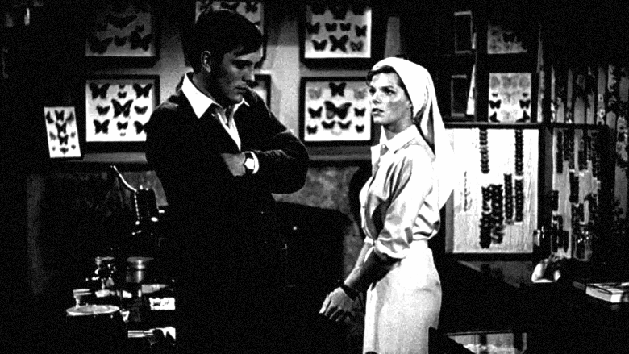
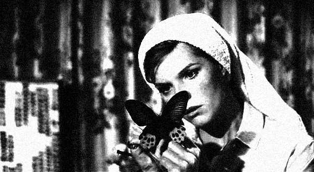

Specimen No. Ⅰ | Written by Maya Lee
The protagonist, Frederick Clegg, is a lonely clerk at city hall who collects butterflies in his spare time. The film unfolds after Frederick kidnaps Miranda, a middle-class art student with whom he has fallen in love.
Freddie shows Miranda the butterflies he has collected. Miranda admires his efforts and the rare, beautiful butterflies, but at the same time says she feels sad. She is referring to the fact that he has killed so many creatures.


They're dead. Why? Why did you kill them? Look at them. They were so beautiful, and now they're just... labels. Miranda said to Frederick, expressing her sadness and confusion about his butterfly collection.
The butterfly collection serves as the film’s most obvious metaphor. Frederick seeks to add Miranda to his collection of pretty but useless objects—a beauty he keeps locked away. To him, she is something to be looked at, not interacted with; a prize removed from the world to be privately and selfishly indulged in.
By the midpoint of the film, Frederick’s actions raise a chilling question: Does he truly love Miranda? Frederick is so obsessed with the act of collecting that he has completely forgotten the sanctity of life. At the end of the film, Miranda meets a tragic death. Though Frederick briefly blames himself, he quickly shifts the narrative, convincing himself that it was her own fault. Soon after, he decides to "lower his sights" and find a more ordinary, easily tamable woman to collect. Within days, Frederick is already stalking a nurse, hunting for his next specimen.
Behind the vague sentiment that might be mistaken for love, the essence is missing. One cannot help but wonder how many encounters in our own world are similarly bound by false emotions—entangled in possessiveness, carnal desire, and selfishness—effectively imprisoning the other person in a cage of our own making. ⁋